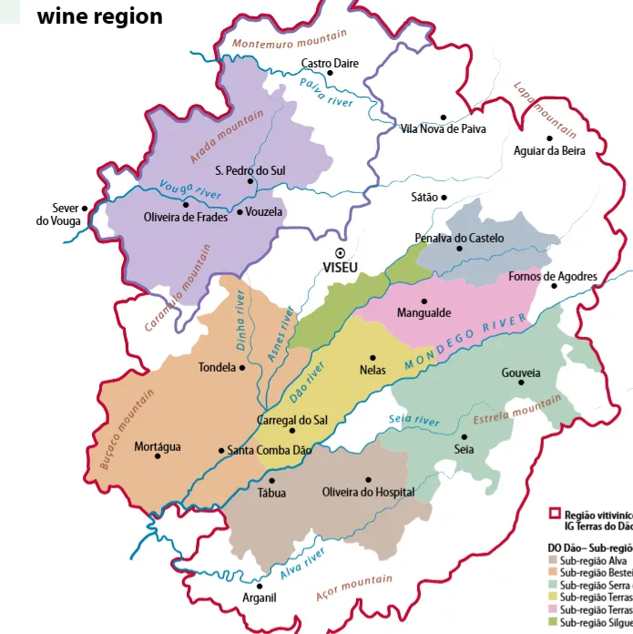
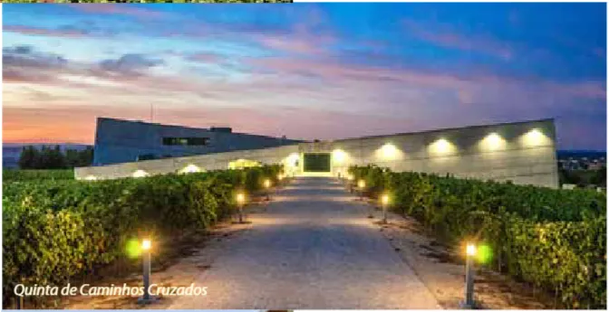
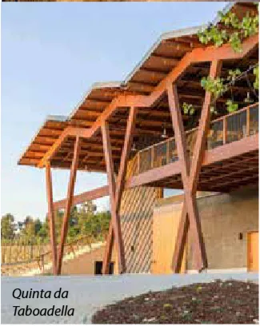

Chapter 4 · The Portuguese wine regions
Dão and Lafões Wine Region
Key figures (2022)
Viticultural area: 13,409 ha
Total Production: 2,792,000 litres
The Dão and Lafões DOs are included within the region which currently bears the denomination Terras do Dão.
History
There are few vestiges of viticulture from Classic Antiquity in the Dão region, although 80 small wine presses carved out of the rock of various designs, sizes and from various periods have been found. With the presence of the Cistercian monks, charters and documentary evidence exists from the 12th century onwards. From the 15th century on, there are many documents attesting to the quality and economic importance of Dao wine. Because of the delay in Phylloxera reaching the plateau of the region, vine cultivation achieved its highest level of importance, unlike those viticultural regions which had already been destroyed by the American plagues. It was in 1865 that António Augusto Aguiar promoted the idea of demarcating the region, but encountered difficulty in achieving this because of an unstable political situation. Demarcation only occurred in 1908, and was revised in 1910, and again in 1912 when the geographical boundaries of the DO as they currently stand were defined, as a result of the creation of the “Comissão Reguladora do Vinho do Dão” (Dão Wine Regulatory Commission), as it was formerly known. The renamed Comissão de Vitivinicultura da Região do Dão – CVRD (Regional Vitivinicultural Commission of the Dão) was officially approved as the certification authority mandated to regulate the production, trade and certification of wine products that qualify for the Denomination of Origin (DO) DO Dão or DO Lafões, or the Geographical Indication (IG) IG Terras do Dão. Legislation confirmed the demarcation in 1912 in the geographical area currently identified as IG Terras do Dão (corresponding to the former Beira Alta area and the IG Beiras)
Terroir
Climate Köppen-Geiger classification:
Csb, (humid temperate). It has a climate that, although temperate, is nevertheless extremely cold and rainy during winter and frequently very dry and hot season in summer, with very cold nights and moderate dryness.
MCC System indices (Tonietto & Carbonneau, 2004): heliothermal index (HI): -1, cool night index (FI): +2, dryness index (DI): +1. The Estrela Mountain range protects the region from Iberian continental influences. In the vicinity of the mountains, there is a risk of late frosts in April, and during flowering, there is weather instability with possible thunderstorms and even hail.
Rainfall: 1200–1300 mm; 80% of which falls between October and April. Tel.: 232 410 060,
Geology: Orographically, the region is a plateau surrounded by the mountains of Caramulo and Bussaco, protected from sea winds. Situated in the central north of Portugal in a mountainous enclave, the region has the imposing mountain ranges of Nave and Serra da Estrela to the north, which form an important barrier to the humid coastal areas and harsh continental winds.
Vineyard elevation: At 800 metres (and occasionally 1,000 metres) in the Serra da Estrela mountain range and at 200 metres in low-lying areas.
The soils of the vineyards are of poor fertility, mainly of granitic origin, with spots of Precambrian schist. They are often humid and fertile. The Terras do Dão IGP includes the subregion with the right to bear the complementary Terras de Lafões denomination of origin.
Types of wine produced
Terras do Dão IG or Terras do Dão
regional wine: Red, white, rosé, sparkling.
“Terras de Lafões” subregion:
Red, white, rosé, sparkling.
Dão DO wines (VQPRD): Red (Garrafeira, Reserva), Nobre, Novo, Clarete, white, rosé.
Dão DO sparkling wines (VEQPRD)
Lafões DO wines (VQPRD): Red, white.
Regional contacts
Technical information: Comissão Vitivinícola Regional do Dão (Regional Vitivinicultural Commission of the Dão) – Solar do Vinho do Dão, Rua Dr. Aristides de Sousa Mendes Fontelo, 3501-908 VISEU Tel. 232 410 060, e-mail: Info@CVRDao.pt,
Website: www.cvrdao.pt Cultural information on the wine
of the region: Confraria dos Enófilos do Dão (“Confraternity of Dão Oenophilists), Solar do Vinho do Dão, Rua Dr. Aristides de Sousa Mendes Fontelo, 3501-908 VISEU
e-mail: Info@CVRDao.pt,
Website: www.cvrdao.pt
Producer and bottler information:
http://www.ivv.min-agricultura.pt/ np4/1736.html, Yearbook 2011, pages 169–174.
Certification authority: Comissão Vitivinícola Regional do Dão (Regional Vitivinicultural Commission of the Dão), Solar do Vinho do Dão, Rua Dr. Aristides de Sousa Mendes, Fontelo, Apt. 10, 3501-908 VISEU – Tel.: 232 410 060, Fax: 232 410 065 – Website: www.cvrdao.pt – e-mail: info@cvrdao.pt
Enotourism information: Dão Wine Route (in the same building as the Vitivinicultural Commission), Rua Dr. Aristides de Sousa Mendes Fontelo, 3501-908 VISEU Tel. 232 410 060, e-mail: Info@CVRDao.pt, Website: http://www.quintadoriodao.com

Botany (biodiversity features) and authorised IG Terras do Dão and IG Terras de Lafões
varieties:
Legal basis: Ordinance n.º 155/2014 / 7th August, Ordinance n.º 378/2017 of 18 December and Decree-Law n.º 212/2004 of 23 August.
Red wines: Água Santa, Alfrocheiro (Tinta Bastardinha), Alicante Bouschet, Alvarelhão (Brancelho), Amaral, Aragonez (Tinta Roriz, Tempranillo), Baga, Bastardo (Graciosa), Cabernet Franc, Cabernet Sauvignon, Camarate, Campanário, Castelão, Cidreiro, Coração de Galo, Cornifesto, Grand Noir, Jaen (Mencia), Malvasia Preta, Marufo (Mourisco Roxo), Merlot, Monvedro, Moreto, Mourisco, Pilongo, Pinot Noir, Português Azul, Rufete (Tinta Pinheira), Syrah (Shiraz), Tinta Carvalha, Tinta Francisca, Tintem, Tinto Cão, Touriga Fêmea, Touriga Franca, Touriga Nacional, Trincadeira (Tinta Amarela, Trincadeira Preta), Vinhão (Sousão), Alvar Roxo, Folgasão Roxo, Gewürztraminer and Malvasia Fina Roxa.
White wines: Alicante Branco, Alvar, Alvarinho, Arinto (Pedernã), Arinto do Interior, Assaraky, Azal, Barcelo, Bical (Borrado das Moscas), Branda, Cerceal Branco, Cercial, Chardonnay, Douradinha, Encruzado, Esganoso, Fernão Pires (Maria Gomes), Folgasão, Folha de Figueira (Dona Branca), Fonte Cal, Gouveio, Jampal, Loureiro, Luzidio, Malvasia Fina, Malvasia Rei, Moscatel Galego Branco (Muscat à Petits Grains), Pinot Blanc, Rabo de Ovelha, Riesling, Sauvignon (Sauvignon Blanc), Semillon, Sercial (Esgana Cão), Sercialinho, Síria (Roupeiro, Códega), Tália (Ugni Blanc, Trebbiano Toscano), Tamarez (Molinha), Terrantez, Uva Cão, Verdelho, Verdial Branco, Viosinho and Vital.
Prestigious wineries
in the region:
The structure of the Dão wineries is predetermined by their viticultural history. In the past, it was basically the large winemaking groups that were responsible for distributing Dão wines with the oldest translation of officiallydemarcated quality wine for DO. Companies such as Sogrape and José Maria da Fonseca – Vinhos, and

Sub-região Serra da Estrela Sub-região Terras de Senhorim Sub-região Terras de Azurara
IG Terras de Lafões
DO Lafões
others, with their good commercial structure, used their own brands and wineries to process grapes from the region, or they bought from a large network of cooperatives, historically suppliers of bulk wine. Global Wines/ Dão Sul Through Dão Sul, Global Wines is the leading private company in Dão. It also has wineries in Bairrada, Alentejo, and 7 million bottles annually from the 600 ha of vineyards it manages, some 150 ha of which are in Brazil, with 30 ha overall representing organic wines. The company places emphasis on research, development and innovation (RDI) and instituted an Applied Research Center in 2003. The wine tourism part if its business is well developed and managed. It has partnered with Quinta das Tecedeiras – Sociedade Vitivinícola, Lda., in the Douro. It incorporated the company Quinta do Encontro – Sociedade Vitivinícola, Lda., in Bairrada. It is also in partnership with the company Gradil – Sociedade Vitivinícola, Lda., in the Lisboa region. It created Quinta de Cabriz, the location of its head office and its wine tourism flagship. Wines of Brazil S.A., with production in the region of the S. Francisco Valley – Brazil is an important asset, as is its company Herdade Monte da Cal – Alentejo Wines, S.A., in Alentejo. Adega Cooperativa de Penalva do Castelo With 1,000 members, this cooperative winery receives grapes from more than 1,200 hectares of vineyards every year, produces an average of ten million litres of wine, and has the most modern winemaking, ageing and bottling technology, making it a leading Dão wine business. The cooperative has expanded to include the company Paço de Santar – Vinhos do Dão, S.A. Quinta da Taboadella Boas Quintas




Palácio dos Condes de Anadia – Mangualde, Viseu. Quinta da Vegia Quinta Nova de Nossa Senhora (belonging to the Amorim family, of cork production fame) has 40 ha of vineyards. Adega Cooperativa de Mangualde has 400 active members and a capacity for 6,000 tonnes of grapes. Adega Cooperativa de Vila Nova de Tázem Casa Cardozo de Menezes, Lda Casa da Ínsua Casa da Passarella Casa da Peneirada Casa de Santar Quinta da Alameda Quinta da Bica Quinta da Pellada Quinta da Turquide Quinta do Cerrado Quinta do Giestal Quinta do Loureiro
Quinta dos Roques Quinta de Caminhos Cruzados, Nelas